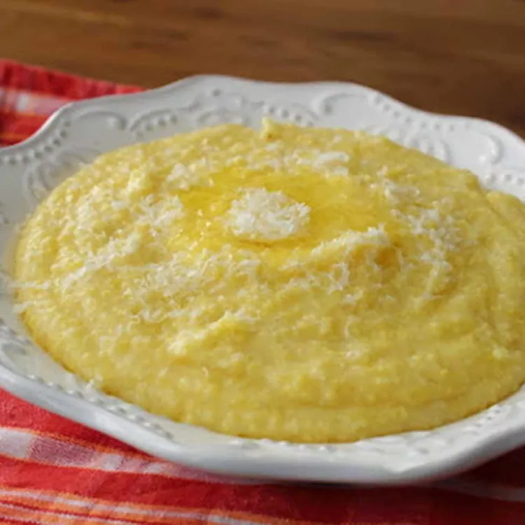

PolentaRecipes

This lasagna recipe takes a little work, but it is so satisfying and filling that it's worth it!
How to make lasagna
Making lasagna can be time-consuming, but the results are well worth the wait. You'll find a detailed ingredient list and step-by-step instructions in the recipe below, but let's go over the basics:
Ingredients
- Water:You'll need about four cups of water for every cup of polenta.
- Salt:Don't forget to salt the water before adding the polenta!
- Polenta:Find it in the rice aisle at the grocery store.
- Butter:Three tablespoons of butter adds richness and moisture.
- Cheese:Freshly grated Parmigiano-Reggiano cheese takes this polenta over the top.
Here's a very brief overview of what you can expect when you make polenta at home::
- Add the polenta to salted boiling water.
- Simmer until the polenta is slightly thick.
- Cover and continue cooking until the polenta is very thick.
- Stir in the butter and cheese.